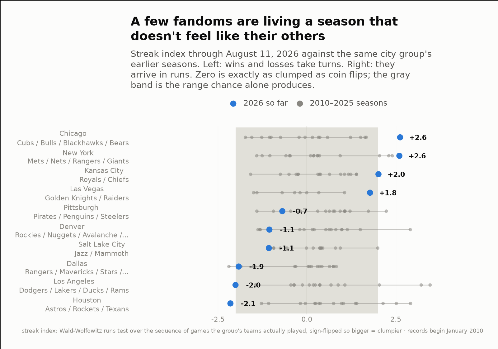
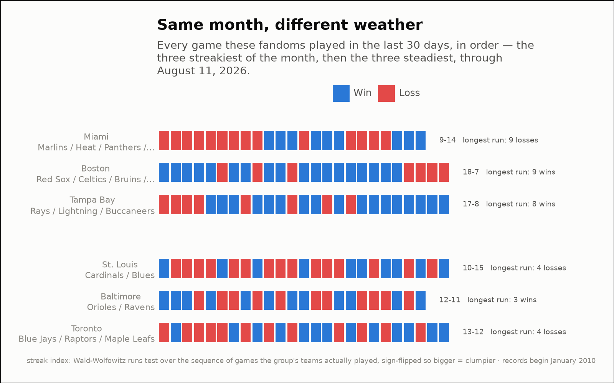

Streakiness — not how often they win, but how the wins arrive
All 88 city groups, through August 11, 2026
- City groups measured
- 88
- Furthest from its own norm this year
- Houston: Astros/Rockets/Texans — streak index -2.1 over 182 games, against a usual +0.4
- Streakiest of the last 30 days
- Miami: Marlins/Heat/Panthers/Dolphins — +2.7, longest run 9 losses
- Steadiest of the last 30 days
- Toronto: Blue Jays/Raptors/Maple Leafs — -1.9, wins and losses taking turns
- Reading the index
- +2 or more is clumpier than chance, −2 or less more alternating than chance, 0 exactly as clumped as coin flips

